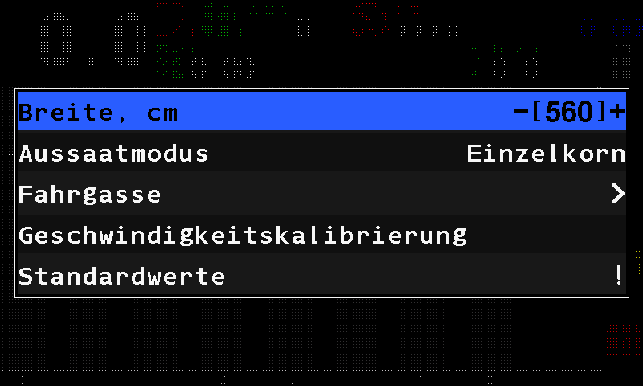
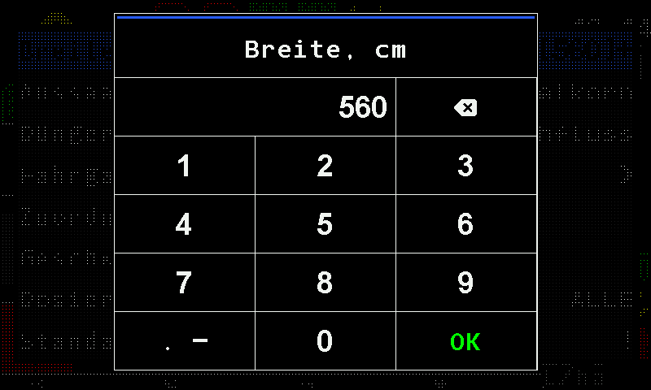
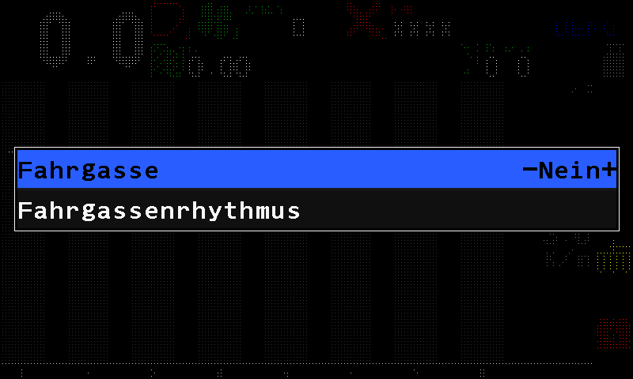

Sämaschinen-Parameter
Die Arbeitsbreite, die Modi für Aussaat und Düngung, die Fahrgasse, die Zuordnung von Sektionen zu Aktuatoren und die beiden Kalibrierungen, bei denen die Maschine fahren muss.
„Einstellungen“ → „Sämaschinen-Parameter“. Der Punkt erfordert die Ebene „Agronom“ (Agronomen-Ebene aktivieren) und ist bei einer Maschine ohne Geschwindigkeitssensor und ohne Fahrgassen-Aktuator verborgen. Welche Punkte er enthält, hängt vom Profil ab.

- „Breite, cm“ – die Arbeitsbreite. Der markierte Wert steht zwischen –[** und **]+.
- „Aussaatmodus“ – „Durchfluss“, „Hybrid“ oder „Einzelkorn“.
- „Fahrgasse“ – das Untermenü der Fahrgasse.
- „Geschwindigkeitskalibrierung“ – startet die Geschwindigkeitskalibrierung.
- „Standardwerte“ – Werkseinstellungen für dieses Menü. Nur Ebene Service.
Breite, cm
Die Arbeitsbreite des Geräts. Daraus wird die bearbeitete Fläche berechnet, daher muss sie eingegeben werden. Drücken Sie beim Punkt „MENU“: Das Zahlenfeld öffnet sich. Geben Sie die Ziffern ein – die Taste oben rechts löscht die letzte – und berühren Sie „OK“ zum Übernehmen, oder drücken Sie „BACK“, um den alten Wert beizubehalten.

Modus Aussaat, Modus Dünger
Je drei Modi:
| Modus | Einheit | Für |
|---|---|---|
| „Durchfluss“ | Körner pro Sekunde | Drillmaschinen |
| „Hybrid“ | Körner pro Meter | Drillmaschinen – empfohlen |
| „Einzelkorn“ | Körner pro Meter, mit gezählten Fehlstellen und Doppeln | Einzelkornsämaschinen |
Modus Flüssigdünger
„Durchfluss“ (Liter pro Minute) oder „Nach Fläche“ (Liter pro Hektar). Wird nur angezeigt, wenn im Profil kein Pumpencontroller für Flüssigdünger steht – mit Controller wählt das Panel den Modus selbst.
Zuordnung Aktuator-Sensor
Welche Sektionssensoren zu welchem Fahrgassen-Aktuator oder Elektromotor gehören. Schaltet dieser Aktuator seine Sektionen ab, wechseln deren Sensoren in die Fahrgassenüberwachung.

Eine Zuordnung ist ein Bereich: „Bereichsanfang“ und „Bereichsende“ – gleiche Zahlen bedeuten eine einzelne Sektion. Einem Aktuator lassen sich bis zu vier Bereiche zuweisen. Bei einer Maschine mit Dosiermotoren hat der Bildschirm zusätzlich „Zuordnung Motor-Sensor“.
Fahrgasse
Die Rhythmen der Fahrgasse, in einem eigenen Untermenü mit zwei Punkten: „Fahrgasse“ („Nein“ / „Ja“) und „Fahrgassenrhythmus“.

Einen Rhythmus einrichten: Fahrgassenrhythmus einstellen.
Geschwindigkeitskalibrierung und Dosierer-Kalibrierung
Die beiden Kalibrierungen, bei denen die Maschine fahren muss. Neben „Dosierer-Kalibrierung“ steht eine Zahl: der zu kalibrierende Dosierer, oder 0 für alle auf einmal.
Ihre Maschine tut etwas, das diese Seite nicht beantwortet? Schreiben Sie an support@agriwelt.com — es antwortet ein Ingenieur.